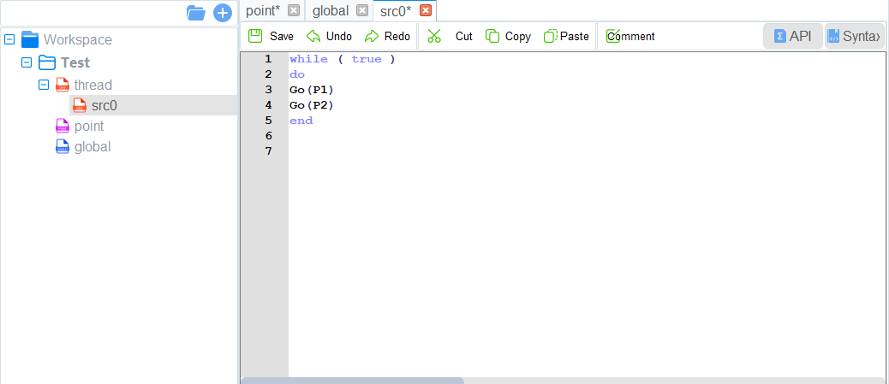

Scripting
DobotSCStudio offers a traditional script-based programming interface used to control the robot using the Lua language.
Project Description
Programs are managed in project form, including teaching points list, global variables, and program files. The diagram below describes the structure of a project.
- Multiple threads are supported in scripts. Up to 5 threads can be executed simultaneously.
scr0.luais the main thread. Other threads are sub threads, which run programs parallel to the main thread. - Motion commands cannot be called in subthreads. Only the main thread supports motion commands.
- In addition, the global variable module is only used to define global variables and module functions. The motion commands cannot be called here.
Programming Interface Description
When programming a robot, your authority level must be programmer or higher. The image below shows the programming panel.
| Number | Name | Description |
|---|---|---|
| 1 | Project Files | A directory tree of files related to all open projects |
| 2 | Common Button | Buttons used to interact with the programming area |
| 3 | Programming Area | A text editor used to create your routines, program functions, and define variables. |
| 4 | Running Button | Buttons used to interact with the project used build, run, stop, etc. |
| 5 | Debug Panel | Displays the debug output of the program |
Programming Description
Creating Project
Prerequisites:
- The robot has been powered on.
Procedure:
- Navigate to the script page.
- Start a new project by pressing the button displaying a page and a “+”. Give your project a title and, if desired, select a template. Click OK.
- Set the number of threads based on site requirements. Click thread and right-click New thread file.
- (Optional) Import the existing taught positions list.
- If you want to reuse a taught positions list from an existing project, right-click Point and click Import Points File.
Import Project
If you need to reuse project files from another robot, you can export project files from the robot to your local computer and then import them into the current robot.
Prerequisites:
- The robot has been powered on.
Procedure:
- Click Workspace and right-click Import Project.
- Select a project to be imported.
- In the Import Project page, there are two files:
prj.jsonandpoint.json. Select the project fileprj.json.
- In the Import Project page, there are two files:
- Click Open.
Teaching Points
Prerequisites:
- The project has been created or imported.
Procedure:
- After creating a project, teach positions on the point page for calling commands when programming a robot. If the existing taught positions list has been imported, this operation can be skipped.
- Enable the robot.
- Click Jog buttons to move the robot to a point.
- Go to points tab and add the robot’s current point to the list.
- You can select a taught position and double-click the parameters on the line to modify the relevant information.
- You can also press the Cover button to replace the selected point with the robot’s current point.
- Continue adding points until all relevant points are in the list.
- Click Save to save all points.
Writing a Program
Prerequisites:
- The project has been created or imported.
- The points have been taught.
Procedure:
- Program your robot’s routine according to your needs. The available commands and syntax are available in the Syntax panel. You can also view the Lua Scripting Guide.